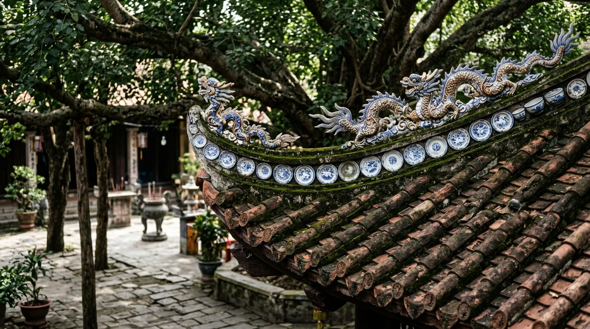

🧭 1. Tổng Quan Tổ Đình Giác Lâm Ba Trăm Năm
Được Bộ Văn hóa công nhận là Di tích Lịch sử – Văn hóa cấp Quốc gia năm 1988 (Quyết định số 1288-VH/QĐ), Chùa Giác Lâm là ngôi cổ tự lâu đời nhất còn bảo lưu nguyên vẹn kiến trúc truyền thống tại Sài Gòn – Gia Định. Toàn bộ ngôi chùa kết cấu theo bình đồ chữ Tam (三) đặc trưng phương Nam gồm ba dãy nhà ngang nối liền: Chánh điện, Giảng đường và Nhà trai. Nâng đỡ mái chùa cổ kính là hệ thống 98 cột gỗ quý (riêng chánh điện có 56 cột lớn chạm khắc câu đối thếp vàng rực rỡ), bên trên bờ nóc và vách tường khảm hơn 7.000 chiếc đĩa sành sứ cổ thế kỷ XVIII – XIX vô cùng độc đáo.
Bên trong không gian u tịch nhuốm màu thời gian, Tổ đình đang gìn giữ kho tàng 113 pho tượng cổ (chủ yếu tạc bằng gỗ mít và đúc đồng từ thế kỷ XVIII – đầu thế kỷ XX) như tòa Cửu Long Thái tử Tất Đạt Đa đản sinh, bộ Di Đà Tam Tôn, Ngũ Hiền và Thập Bát La Hán. Phía sân trước rợp bóng cội Bồ Đề thiêng chiết từ Sri Lanka do Đại đức Narada trao tặng năm 1953, sánh đôi cùng Bảo tháp Xá Lợi 7 tầng lục giác cao 32m và khu vườn tháp Tổ Lâm Tế trầm mặc.
📜 2. Nghi Thức Thắp Hương & Văn Khấn Cổ Tự
Là ngôi chùa gỗ gần 300 năm tuổi lưu giữ hàng trăm cổ vật quý hiếm giữa lòng đô thị, Tổ đình Giác Lâm đề cao sự tĩnh lặng tuyệt đối và ý thức bảo vệ di sản phòng cháy nghiêm ngặt.
🏮 3 Quy Chuẩn Cốt Lõi Khi Hành Lễ Tại Tổ Đình Giác Lâm
🕯️ Tuyệt Đối Không Thắp Hương Trong Nhà Gỗ 98 Cột
Hệ khung 98 cột gỗ quý và 113 pho tượng gỗ mít gần ba thế kỷ rất nhạy cảm với khói nhiệt. Hành giả chỉ dâng 01 nén hương tại lư đồng ngoài sân trước, vào nội điện chỉ chắp tay lễ bái chánh niệm.
🗣️ Không Chạm Vào Đĩa Sứ Cổ, Bao Lam & Tượng Gỗ Thế Kỷ XVIII
Không sờ tay lên lớp sơn thếp của 56 cột câu đối, các bức chạm gỗ đề tài dân gian hay các đĩa sứ cổ gắn trên tường và mái chùa; không chụp ảnh đèn flash trong khu vực điện thờ và Tổ đường.
🪷 Giữ Tĩnh Mặc Giờ Công Phu & Nghiêm Trang Nơi Tổ Đường
Bước chân êm nhẹ trên nền gạch tàu cổ, hạ giọng thì thầm khi đi qua Giảng đường và Tổ đường. Thực hành văn khấn hướng về đạo hiếu, tri ân bậc tiền hiền mở cõi, không cầu xin tài lộc mê tín.
⛩️ 3. Lộ Trình 6 Trạm Cổ Tự & Chánh Niệm
Hành trình 6 trạm đưa du khách đi ngược dòng thời gian từ sân Bồ Đề – Bảo tháp Xá Lợi, chiêm ngưỡng mái đĩa sứ chữ Tam, bước vào rừng cột câu đối và 113 tượng cổ, đến Tổ đường Lâm Tế và vườn tháp Cẩm Sơn.
Hành Trình Thiền Hành Chiêm Bái Cẩm Sơn Cổ Tự (1744)
Trải nghiệm tuần tự 6 trạm di sản tâm linh tại ngôi chùa cổ nhất TP. Hồ Chí Minh với đầy đủ hướng dẫn lễ nghi và văn khấn truyền thống.

Ngay khoảng sân thoáng rộng sau cổng Tam Quan là cội Bồ Đề cổ thụ xanh rợp bóng được Đại đức Narada (Sri Lanka) mang nhánh con từ cây Bồ Đề thiêng sang trao tặng chùa ngày 18/06/1953, phía trước an vị tôn tượng Quan Thế Âm Bồ Tát. Kề bên là Bảo tháp Xá Lợi hình lục giác 7 tầng cao 32m tôn thờ xá lợi Phật trang nghiêm.
🚪 Nghi Thức Hành Lễ & Lối Đi
- Bước qua cổng nhị quan và tam quan với phong thái khoan thai, dừng lại dưới bóng Bồ Đề điều hòa hơi thở.
- Nếu nhặt được lá Bồ Đề rụng tự nhiên dưới sân có thể nâng niu lưu giữ, tuyệt đối không hái lá trên cành.
- Đi nhiễu quanh Bảo tháp Xá Lợi theo chiều kim đồng hồ để gieo duyên phước lành.
🙏 Giá Trị Lịch Sử & Tâm Linh
- Cội Bồ Đề năm 1953 là biểu tượng kết nối tình hữu nghị Phật giáo Việt Nam và Sri Lanka hơn bảy thập kỷ qua.
- Bảo tháp Xá Lợi khởi xây từ thập niên 1970 và hoàn thiện năm 1994, tầng 7 tôn trí ngọc Xá Lợi Đức Phật Thích Ca.
- Trước sân gợi nhớ cảnh đồi Cẩm Sơn hoa gấm nở rộ thuở cư sĩ Lý Thoại Long lập am năm 1744.
CHỨNG NHẬN CHIÊM BÁI TỔ ĐÌNH GIÁC LÂM TRỌN VẸN
Nguyện đem công đức chiêm bái Tổ đình ba trăm năm hồi hướng thân tâm thanh tịnh, gia đạo cát tường.
🧭 4. Lịch Trình Chiêm Bái 1 Ngày Tối Ưu
Gợi ý một ngày lắng đọng khám phá mạch nguồn Phật giáo và di sản văn hóa Gia Định – Chợ Lớn cổ kính giữa lòng TP. Hồ Chí Minh.
Buổi Sáng (07:30 – 10:30): Hành Lễ 6 Trạm Tổ Đình Giác Lâm
Đến chùa buổi sớm khi nắng xiên qua tán Bồ Đề Sri Lanka và mái ngói rêu phong. Thực hành trọn vẹn lộ trình 6 trạm từ Bảo tháp Xá Lợi, ngắm đĩa sứ cổ trên tường hồi, chiêm bái tòa Cửu Long và 113 pho tượng gỗ, đảnh lễ Tổ đường Lâm Tế và dạo bước tĩnh tâm nơi vườn tháp Tổ.
Buổi Trưa (11:00 – 13:30): Thưởng Thức Cơm Chay Thanh Đạm khu vực Bảy Hiền – Phú Thọ
Dùng bữa trưa chay truyền thống Nam Bộ (canh chua bông điên điển chay, nấm kho tộ, bì cuốn chay và nước sâm mát lành) tại các quán chay lâu đời quanh trục Lạc Long Quân – Minh Phụng. Lưu ý chánh điện chùa nghỉ trưa từ 12:00 đến 14:00.
Buổi Chiều (14:00 – 17:00): Chùa Giác Viên & Phố Cổ Chợ Lớn Di Sản
Tiếp tục ghé thăm Chùa Giác Viên gần công viên văn hóa Đầm Sen (ngôi cổ tự anh em cùng hệ phái Lâm Tế với Giác Lâm), sau đó dạo bộ khu phố cổ Hải Thượng Lãn Ông – Hội quán Tuệ Thành để cảm nhận trọn vẹn trầm tích văn hóa Sài Gòn – Chợ Lớn xưa.